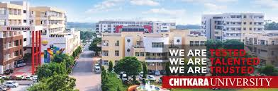

Various environment friendly factorssuch as Water, Air & Noise, Land, Parking, Flora & Fauna, Socio Economic, Solid Waste Treatment, Nursery, Solar Systems contribute in making an eco-friendly campus We at the Chitkara University, Himachal Pradesh are taking care of all these above- mentioned factors in the following ways:
The total water requirement for the institution is 279 KLD.Water quality of ground as well as surface resources in the area has been studied for assessing the water environment. Quality of water supplied by HIMUDA in the area is potable. Rain Water Harvesting has been provided for recharging the aquifer to compensate withdrawal to some extent.
About 223 m3/day of wastewater is being generated. Sewage Treatment Plant of 250 KLD has been installed.The treated water is being used for plantation within the premises. SEWAGE TREATMENT PLANT Sewage treatment plant installed in campus is fully functional. Sewage generated by residential establishment, which include household waste, liquid from toilets, bath showers, kitchen & sink flows into it. It caters for treatment of sewage of entire population staying on campus. Treated water from it, is being used for watering of lawns, vegetable garden, cleaning and washing of roads, vehicles etc.
The University has installed noise free generators for power backup. No other point source of emissions like boiler, furnace etc. to run on fossil fuels, have been provided. So, the University does not generate Air & Noise Pollution.
The land under the project is designated for Educational activities as per Himachal Government.No additional burden on land has been created which may adversely affect land use pattern in the area. No natural drain is being obstructed. The University land does not interfere with any forest, wetland, river, lake, mountain, national park & sanctuary etc.
The students are not allowed to keep their own vehicles in the hostel. The University has its own buses for local students. The layout has been planned to provide adequate space for parking within the compound. v) ECOLOGY & BIO-DIVERSITY Flora: Apart from records of Forest Department, field surveys were undertaken to study the vegetation and floral components in 10 km radius area. The main species of trees found in the area are Kikar (Acacia Arabic), Neem (Azardirachtaindica), Peepal (Ficusreligiosa) and Bargad (Ficusbengalensis), Among the species which have been introduced recently includes Mango, Khair, Safedsiris, Kala siris, Amaltas, Jamun, ArjunBahera and Zizyphus which are commonly grown in the area. Most of these trees are planted on the University Campus. Apart from these Van Mahotsav (Tree Plantation) is celebrated every year in the Campus on August 15. Fauna: Prolific wild life is not observed in the University, as there is no thick forest/vegetation. Lizards, snakes, hare, pigeon, mongoose and peacock are noticed in the University area.
The University is working on positive note for the benefit of the society at large. It not only provides employment to local people but it provides better quality of education, improved infrastructure facilities, environment friendly campus and better recreational facilities.A change has been observed in social behaviourof nearby areas due to activities like rainwater harvesting, recycling of sewage, use of solar lights etc. Provision of clean environment with proper handling of wastes like sewage and solid wastes hinder pathways of pathogen transmission from waste to man i.e. flies, mosquitoes, rodents, pigs and stray dogs and thus improves the health of the residents of nearby area.
The solid waste generated from the University is effectively recycled within the project. The solid waste generated in the Institutes will be mostly waste papers, answer sheets and domestic waste like kitchen waste.The Institutes make necessary arrangements for disposal of solid waste. Kitchen waste is taken care by Vermi composting and the waste paper has been recycled. Recycling has helped better the environment by reusing rather than building up waste. We have installed recycling plant at university, with the aim to recycle waste paper and converted into new papers, file covers, sheet, noting pad etc. The details about vermicomposting and paper recycling plant is given as under (VERMI COMPOST) Composting is controlled process of decomposition used to transform organic material such as kitchen scrap into humus, which is a dark, soil like substance. Vermi composting is simply composting with earthworm and best kind to use are red worms as these make indoor composting feasible and are very efficient to process organic waste. In the picture vermin compost is seen where kitchen waste like vegetable cutting etc are used thus resulting in effective and useful waste management. Sprawling lawns and blooming flowers planted in the campus is testimony to use of organic manure generated. PAPER RECYCLING PLANT Concept of recycling paper has become increasingly popular throughout in the past decade. Paper recycling is the method to convert an old paper into a new paper that can be used in different ways. Recycling helps in improvingthe environment by reusing rather than building up waste. The pictures of the recycling plantinstalled in the University to recycle the waste paper can be seen above. File covers, Sheets, Noting pad , paper lamps etc are made at almost no cost basis and no tree are cut to meet the essential requirement of stationery for University. It also proves very useful in the disposal of examination answer sheets after shredding.
University has its own nursery, which is source of sapling for arboriculture, blooming flowers, lawns with hedges, flower beds and potted flowers which adds to the greenery and picturesque surroundings. ix) SOLAR SYSTEM There are many solar – powered products and technologies utilizing the sun energy. One of the major is solar hot water for residential or commercial purpose, the use of sun’s heat to warm potable water supply instead of electricity is very efficient method and truly cost effective. Array of solar panels installed on rooftop of hostel buildings can be seen in the pictures above. It is part of solar system to provide hot water and is one of the major alternate sources of energy, which results in saving electricity a scarce resource in our country. There are five solar systems thatsupply hot water for students and administrative staffs staying on campus round the year.
Roof Top Rain Water: A roof top rain water is collectedto minimizethe withdrawal from groundwaterand is used for ground water recharge. ENVIRONMENT MANAGEMENT PLAN The University has designed an Environment Management Plan (E.M.P) in to mitigate the possible adverse effect of various activities on existing environmental factors, during construction as well as in operational stages, to avoid their deterioration, if any. As a social and moral obligation on the part of every body it becomes our bounden duty to leave our environment at least in a state what we inherited from our ancestorsfor the next generation, if notin a better condition. E.M.P. for the University has been prepared keeping in view the existing conditions and likely changes, which may occur in due course of time. The implementation and monitoring of different control measures have also been covered, which are as under: i) Air Environment: • In the University, during construction in any stage water will be sprinkled on the soil to avoid dust generation. The debris and unused construction malba will be removed immediately for recycling, if any, or for designated land fill. • All vehicles for service activities at the University will be checked for vehicular emission. The agencies will be asked to keep them within prescribed limits. They will also be asked to maintain them properly. • As discussed earlier there will be no other point source of Air pollution except the D.G. Sets, which are noise free. Chimneys of suitable height have been provided to control the G.L.C. of PM 2.5 , PM 10 , SO 2, &NO x levels. Extensive tree plantations have been resorted to for further improving the air environment in general and minimize noise levels. ii) Water Environment: • Drinking Water: Fresh water is drawn from HIMUDA water supply scheme and distributed up to user points through an Over Head Service Reservoir. This all is a closed system. • Waste Water: Sewage Treatment Plant with tertiary leveltreatment has been provided. It is installed in a separate area surrounded by trees, thus removing any odor problem. Wastewater from the University is taken to S.T.P. through underground delivery system and treated to tertiary level.Treated water is used for tree plantation, landscaping, parks, irrigation etc within the compound. iii) Land Environment: • To avoid erosion of the top soil the development is planned in the shortest possible time and land-clearing activity is kept to the absolute minimum by working at the specific sites one by one where construction takes place so as to increase detention and infiltration. • The activities that result in soil being laid bare are scheduled in such a manner that some type of vegetative cover appropriate to the site is established prior to onset of monsoons. Natural waterways/drainage pattern is maintained by providing culverts where needed. • The fly ash based cement is being used for the construction purpose in the University. For the development works the use of wood is discouraged and preference is given to Mild Steel, Aluminum, Glass and Plastic etc. • At present, the area under Institutional buildings is only 20% of the total area and the remaining area is under common services such as parks, roads, footpaths, green belt etc.The land used is thus so planned that there is minimum adverse impact. v) Fire Safety: The University has followed all the guidelines for fire safety as per relevant Codes. The campus falls in Fire Zone No.-1 i.e. having residential, educational, institutional, business and retail mercantile buildings. It does not involve high hazard buildings. The University has planned water storage for fire, and provided Fire Hydrants, at suitable locations in the campus. NOC ISSUED BY DIRECTORATE OF FIRE SERVICES, HP vi) Green Belt: • The main objective of the green belt is to provide a barrier between the source of pollution and the surrounding areas. Apart from improving the aesthetics, the green belt helps to capture the fugitive emission and to attenuate the noise generated. • Development of green belt and other forms of greenery shall also prevent soil erosion and washing away of top soil besides helping in stabilizing the functional ecosystem. It further, makes the climate more conducive and restores water balance. • While making choice of plant species for cultivation in green belts, weightage is given to the natural factor of bio-climate. It is also assured that the selected plants are grown as per normal horticultural (or forestry) practice and authorities responsible for plantation make sure that adequate provision for watering and protection of the saplings exists at the site. • The landscaping and green belt has been designed and trees have been planted in open areas, around complex boundary along footpaths and dividers especially along the roads on both sides. About 200 treeshave already been planted with in the campus. More will be planted in due course of time. ENVIRONMENT MONITORING PROGRAMME Regular monitoring of all significant environmental parameters is essential to check the compliance status vis-à-vis the environmental laws and regulation. The objectives of the monitoring are as follows: ➢ To study the trend of concentrated values of the parameters, which have been identified as critical and then planning the mitigating measures. ➢ To check and assess the efficacy of pollution control equipment. ➢ To ensure that any additional parameters, other than those identified above, do not turn critical in due course of time A comp32rehensive environmental monitoring program that has been prepared by the Environment Management Cell to check the following: ➢ Ambient Air quality. ➢ Ambient Noise Levels ➢ Vehicles for PUC ➢ Groundwater quality ➢ Discharge from Sewage Treatment Plant ENERGY CONSERVATION Energy conservation refers to reducing energy by using less of an energy service. One of the primary ways to improve energy conservation in buildings is to use an energy audit. Following Energy Conservation Methods have been adopted at the University campus: i) 20W CFL shall be used for each 40 W tubes for inter lighting. ii) Outer street lighting is completely on solar energy. Likely saving of energy will be as follows:- Load Distribution: 1. Total Internal Lighting Load = 350 KW 2. Water heating = 100 KW 3. Outer Lighting Load = 100 KW 4. Power Load = 645 KW Total Load = 1195 KW Saving: 1. By using 20 W CFL against 40 W tube lights (50%) = 175 KW 2. By using solar energy for heating water (50%) = 050 KW 2. By using solar energy for outer Lighting (100%) = 100 KW TOTAL = 325 KW Percentage = 27% HYDROPONIC FARMING- BASED ON NUTRIENT FILM TECHNIQUES Hydroponics is a subset of hydroculture and is a method of growing plants using mineral nutrient solutions, in water, without soil. Terrestrial plants may be grown with their roots in the mineral nutrient solution only, or in an inert medium, such as perlite or gravel. The University has set up a Hydroponic Farming plant in its campus where tomatoes, broccoli and strawberries are produced using this technique. The total cost of the project is Rs. 9.5 lacs (approximately) whereby 15-20 kg tomatoes are produced per day. It needs 90% less water and 20% less space as compared to soil based gardens, as plants can be grown closer to each other. It has a complete balance over nutrient balance. Even vitamin content of hydroponic plants are 50% more than conventional production. It is not affected by changer of season and production can be done throughout the year. Green Building “Bio- Tecture” is a sustainable structure replacing modern exorbitant structures. Biotectures are cutting edge green buildings constructed using waste car tyres and other recycles materials. They use planets’ natural systems to provide all utilities using the sun’s energy and rain to provide heat, power and water. These are the structures that have evolved from early 70’s but are not yet being brought into major practice. The students of Civil Engineering Department of the University have constructed a “Bio- Tecture” green home as a live project during the semester in collaboration with ACC Cement Ltd. The material used includes Vehicle tyres, trash bottles and scrap. The cost of the project is Rs. 1.6 lakhs (approximately).
